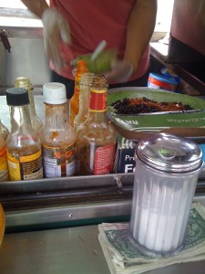
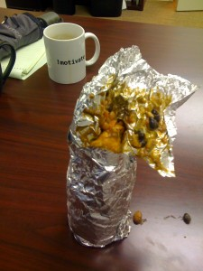
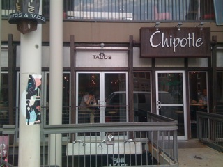

Posted: June 30th, 2010 | Author: chmullig | Filed under: Burrito | Tags: burrito, burrito wednesday | No Comments »
Casa Blanca. It's... unassuming
Burrito Wednesday Week #4: June 23, 2010 — Casa Blanca.
This wasn’t my prime option today, but unfortunately it was 2:30 and choices #1 and #2 were already closed. The weather was hot, and this has the advantage of being in the same building as me. I know a few people who love it, but the few times I’ve been it’s not been exceptional. It has a very… authentic kind of feel. They clearly aren’t interested in being a fancy restaurant – they just want to make food cheaply.

Unassuming? Slightly grody?
Swinging in at 2:30, it was fairly empty. There was a world cup game on the TV, and most of the folks were watching it. They were slow to take my order because they were counting money or something. Eventually they got my veggie burrito. I’m fairly sure I got a dinner entree, but not 100%. I don’t recall the exact price, but it was a bit more expensive. The standard veggie came in a styrofoam tray with fresh salsa, rice & beans on the side, and a nice green hot sauce. Inside the burrito we had more beans, some onions, cheese, some lettuce. Nothing too exciting. To make this sing you really had to mix the rice, salsa hot sauce and burrito all together. As a result the extra beans on the side were pretty unnecessary.
It was huge, which is nice. The salsa was good, beans pretty good. It remained pretty interesting for most of the eating, which was an accomplishment considering the size. I had very, very low expectations based on some past experiences, but this definitely exceeded it. Might be worth coming back for a happy hour negra modelo on a pleasant afternoon.
I’d rate it a 2 on my arbitrary scale. Pretty good, but not mind blowing. The salsa and hot sauce really saved the day.
No Comments »
Posted: June 16th, 2010 | Author: chmullig | Filed under: Burrito | Tags: burrito, burrito wednesday | 1 Comment »

The Burrito & Coffee Cart at 17th and K
Burrito Wednesday Week #3: June 16, 2010 — The Burrito and Coffee Cart.
A mere two blocks away from from Pedro & Vinny’s cart is another burrito cart. Back in 2004 I’d occasionally grab a latte here on the way into the office. I got a burrito once or twice, and was pretty disappointed. Since then I’ve stuck with Pedro & Vinny. However, for the cause of Burrito Wednesdays we must push outside of our comfort zones.
Carlos isn’t as personable or friendly as John. The ordering was much more difficult – he made assumptions and didn’t really ask what exactly I wanted. I ended up with, basically – spinach tortilla, rice, black beans, cheese, a bit of boring salsa, guac and some Cholula. It was something around $6.
Burrito under construction
Unfortunately it wasn’t very good. The tortilla was fine. The cheese was very nicely melted and it was well distributed throughout. The guacamole was definitely the highlight, but it was just from a cosco tub. Frankly, I was hoping from something a bit more unique. The beans and rice were just terribly bland and boring. I didn’t particularly want to finish it, not because of volume but because it was boring. I really can’t see coming back when the fundamental ingredients don’t hold any interest. I give some credit that it was very tidy – unfortunately it was too tidy. Too buttoned up. Too blah.
Sadly it doesn’t score better than 1 on the arbitrary & meaningless scale.

Burrito under consumption
Posted: June 9th, 2010 | Author: chmullig | Filed under: Burrito | Tags: burrito, burrito wednesday | No Comments »
Pedro and Vinny's burrito cart on K St
Burrito Wednesday Week #2: June 9, 2010 — Pedro and Vinny’s Burrito Cart. (Warning, that’s one of the most obnoxious websites ever).
This is one of my more frequent burrito sources. It’s a block from my office, vegetarian and delicious. Styling little cart at 15th and K Sts with a generally long line. Plus, check out the awesome new sticker on the side. The key here is the fantastic selection of hot sauces. He has 3 homemade ones – the infamous classic mango habanero, a tasty cilantro and a new spicy brown sauce I believe he’s calling “K Street Habanero.”

John Rider at work making a burrito, surrounded by the sauces.
There’s a whole system here. While in the (usually long) line you’ll give John your tortilla choice and yes/no to cheese – I go for tomato chili cheese. While you wait in line the tortilla steams and the cheese melts.
When you get up to the cart there’s a flurry of options to determine your burrito. My choice is usually medium (warning: small has no rice), black & tan (meaning both black beans and refried pinto beans), fresh salsa, guac, and various hot sauces. Usually the mango plus something else to make it hotter. Lately that’s been the “triple delight,” all three of his homemade sauces.

Burrito construction near completion
The total winds up at $6.50 for mine. Cash only and you make your own change. How’s it taste? Fantastic. The rice can be a little dry on occasion, and the beans can be a little bland. However when it’s loaded with good sauces, guac, etc it’s really quite flavorful and satisfying. My biggest complaint consumption side would be that it’s very messy to start and end. Take a look at when I pealed off the first part of foil.
Peeling back that first foil, it's mess as all get out. But it's going to be delicious!
However once the main burrito section is average messiness for a burrito. I feel like in the past (particularly pre-hiatus, he spent almost a year down in the Carolinas or Georgia possibly setting up a storefront down there, but came back) they were a bit more controlled and less messy. Regardless, it was tasty. You even get a free York peppermint patty at the end! I think these get a solid 4 on the arbitrary & meaningless scale.
Burrito consumed. Foil and paper towel carnage everywhere, and the peppermint patty steps up to bat.
Posted: June 2nd, 2010 | Author: chmullig | Filed under: Burrito | Tags: burrito, burrito wedsneday, burritoweds, chipotle | No Comments »
I’ve decided that the time has arrived for the establishment of a new tradition in our great lands: Burrito Wednesday. Everyone agrees that burritos are a delicious and amazing food.
What, wait, why? The concept is delightful in its simplicity. Every Wednesday you should go out in search of a new burrito to try. Ideally these would be entirely new locations, but for my purpose I’m going with a “no repeats” model, where places I’ve been too before are fine, as long as it hasn’t been the featured Burrito Wednesday candidate. Why Wednesday? For one, it’s a shitty day of the week and a nice burrito institution would liven it up. For another, I don’t have any standing meetings around lunch time on Wednesday, like I do on most of the other days of the week.
Please join me (either in a literal, have a burrito at the same table sense or metaphorically) in this new tradition. If Wednesday is bad for you, heck, make it Burrito Monday. Why not? I’ll be maybe posting here about the burritos I consume
Week #1: June 2nd, 2010 Chipotle Dupont Circle

I started off with a close, convenient location – Chipotle Dupont Circle. Yes, you might assume you’ve been to Chipotle and know all there is to know. However this branch has a surprise in store – it features the delicious vegan Garden Blend. A fake meat product, it’s quite tasty and rare. This is the pilot location for the stuff, so it’s not quite your regular Chipotle fare. Today I got a burrito with rice, peppers & onions, black beans, garden blend, salsa fresca, tomatilla hot sauce and cheese. I intended to toss corn & lettuce on there, but screwed up. The total came to $6.71 with tax.
The burrito itself was rather tasty. The lack of veggies was a bit of a disappointment, and the hot sauce wasn’t too exciting. The second half sorta dragged on, without much to keep me engaged. Overall it was big, and tasty. Without the garden blend I’m not sure I would have cared much, but the garden blend is unique and interesting. I highly recommend it. I’d rate it about 3 stars on my meaningless and uncalibrated scale.

In upcoming weeks I hope to feature all my regular burrito spots, and expand to some new ones. Pedro & Vinny’s, CalTort, The Well Dressed Burrito, Baja Fresh, Qdoba, Pica Taco, the 17th st cart and a bunch of others. However I’d love suggestions of places to try out that are within reasonable transit distance of Dupont Circle/Downtown DC. Happy burritoing.
No Comments »


{kind=link}
{kind=link}
{kind=link}
{kind=link}
{kind=link}
{kind=link}